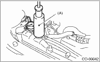
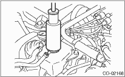

COOLING(H4SO) > Radiator
1. Remove the radiator cap (for non-turbo models) or the coolant filler tank cap (for turbo models), and fill the engine coolant, and then install the tester (A) to the installation position of cap.
• Non-turbo model

• Turbo model

2. When engine coolant leaks at/around radiator, apply the following pressure.
Non-turbo model
157 kPa (1.6 kg/cm², 23 psi)
Turbo model
122 kPa (1.2 kg/cm², 18 psi)
CAUTION:
• Inspection must be carried out at the side of coolant filler tank, not at the side of radiator. (Turbo model)
• Engine should be turned off.
• Wipe engine coolant from check points in advance.
• Be careful to prevent engine coolant from spurting out when removing tester.
• Be careful not to deform the filler neck of radiator when installing and removing the tester.